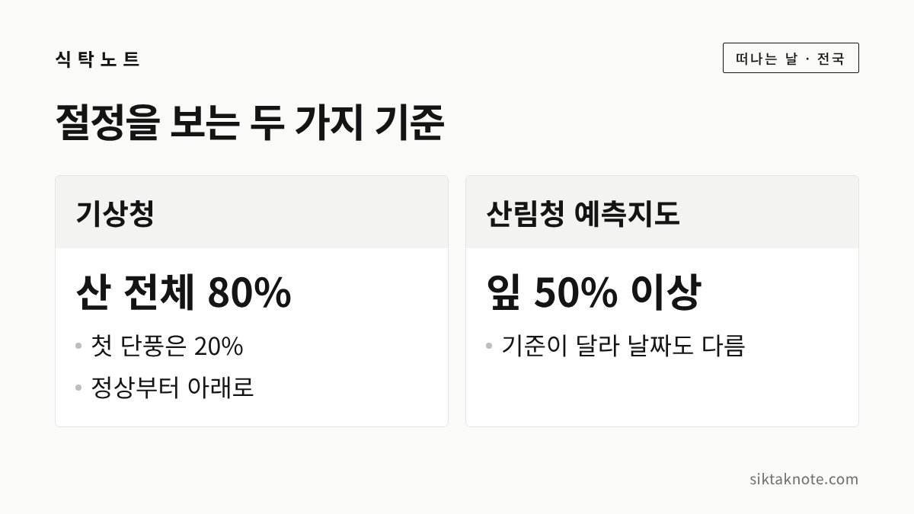
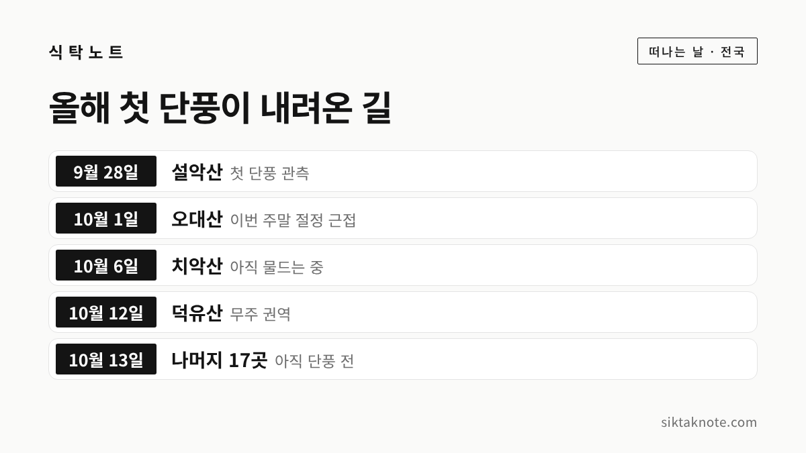
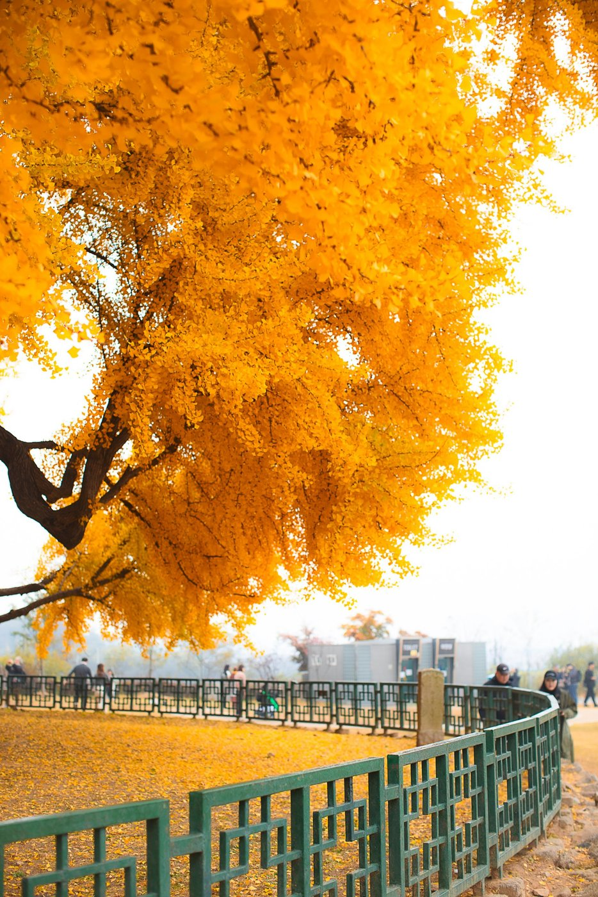

2026 단풍 절정 시기 — 설악산·오대산·치악산·내장산·주왕산·지리산 6곳 언제 가면 좋을까

3줄 요약
- 올해 첫 단풍은 9월 28일 설악산에서 시작해 10월 12일 덕유산까지 내려왔어요.
- 산림청 예측으로 절정은 설악산 10월 20일, 주왕산 26일, 지리산 27일, 내장산 11월 4일입니다.
- 평년과 비슷하거나 조금 늦은 편인데요. 단풍은 날씨에 따라 며칠씩 앞뒤로 달라지니 출발 전에 현황을 확인하시는 게 좋습니다.
행사 정보
- 기준일
- 2026년 10월 15일. 단풍은 날씨에 따라 며칠씩 앞뒤로 달라져요
- 첫 단풍·절정 기준
- 기상청: 산 전체의 약 20%가 물들면 첫 단풍, 약 80%면 절정. 산림청 예측지도는 잎이 절반(50%) 이상 물든 때를 절정으로 봄
- 올해 첫 단풍
- 설악산 9월 28일 (평년과 같고 지난해보다 4일 빠름, 강원지방기상청), 오대산 10월 1일, 치악산 10월 6일, 덕유산 10월 12일 (10월 13일 언론 보도)
- 산림청 절정 예측
- 설악산 10월 20일, 주왕산 10월 26일(단풍나무류), 지리산 10월 27일(단풍나무류), 속리산 10월 28일, 내장산 11월 4일 (언론 보도)
- 현황 확인
- 기상청 날씨누리 '유명산 단풍현황'(21개 산, 11월 27일까지), 강원 단풍·기상 융합서비스(설악산·오대산·치악산·태백산)
- 확인하지 못한 것
- 오대산·치악산의 산림청 예측일, 주왕산 올해 첫 단풍 소식, 지리산·내장산 평년 절정일
2026.10.15 확인 기준. 예상일은 발표 기관과 발표 시점마다 달라요. 탐방로 통제와 예약 여부는 출발 전에 국립공원공단에서 확인하세요.
첫 단풍과 절정, 이렇게 구분합니다

단풍 소식에는 '첫 단풍'과 '절정'이라는 말이 자주 나오는데요. 기상청은 산 정상에서부터 전체의 약 20%가 물들면 첫 단풍, 약 80%가 물들면 절정이라고 부릅니다. 첫 단풍 소식이 들렸다고 온 산이 붉어진 건 아니라는 뜻이죠.
산림청의 '한반도 단풍절정 예측지도'는 기준이 조금 다릅니다. 잎이 절반(50%) 이상 물든 때를 절정으로 보거든요. 그래서 같은 산이라도 기관마다 날짜가 다르게 나옵니다. 숫자를 하나로 못 박기보다 "이 무렵이 가장 곱겠구나" 하는 폭으로 보시는 게 좋습니다.

올해 단풍은 여기까지 내려왔어요

세계일보 10월 13일 보도에 따르면 올가을 첫 단풍은 9월 28일 설악산에서 처음 관측됐고, 오대산(10월 1일)과 치악산(10월 6일)을 거쳐 10월 12일 전북 무주 덕유산 권역까지 왔습니다. 북한산·속리산·내장산·지리산·한라산을 비롯한 나머지 17곳은 아직 '단풍 전' 단계라고 해요. 이번 주말 절정에 가장 가까운 산으로는 오대산이 꼽혔습니다.
단풍은 높은 곳에서 낮은 곳으로, 북쪽에서 남쪽으로 내려오는데요. 그래서 남쪽 산들은 조금 더 기다려야 해요.

명소별 절정 예상 시기
확인한 것만 표로 모았어요. 단풍은 날씨에 따라 며칠씩 앞뒤로 달라지니 어디까지나 '예상'으로 봐 주세요.
| 명소 | 올해 첫 단풍 | 절정 예상 | 평년 절정 |
|---|---|---|---|
| 설악산 | 9월 28일 관측 | 10월 20일 (산림청), 10월 25일 (웨더아이 9월 4일 발표) | 10월 17일 |
| 오대산 | 10월 1일 관측 | 10월 16일 (웨더아이) | 10월 15일 |
| 치악산 | 10월 6일 관측 | 10월 31일 (웨더아이) | 10월 21일 |
| 주왕산 | 확인하지 못했어요 | 10월 26일 (산림청, 단풍나무류) | 10월 27일 |
| 지리산 | 단풍 전 (10월 13일 보도) | 10월 27일 (산림청, 단풍나무류) | 확인하지 못했어요 |
| 내장산 | 단풍 전 (10월 13일 보도) | 11월 4일 (산림청) | 확인하지 못했어요 |
웨더아이는 민간 기상업체인데요. 오대산과 치악산 전망은 9월 11일 보도에 나온 내용이라 그사이 달라졌을 수 있습니다. 설악산 절정은 기관마다 10월 17일에서 25일 사이로 갈린다고 해요. 평년값은 기상청 자료를 인용한 보도에서 가져왔고, 산림청 기준과 달라서 숫자끼리 바로 견주기는 어렵습니다.
오대산·치악산의 산림청 예측일과 주왕산의 올해 첫 단풍 소식은 확인하지 못했어요. 설악산과 오대산을 걷기 쉬운 길은 설악산·오대산 단풍 글에 적어 두었습니다.

올해는 평년보다 이를까요, 늦을까요
지금까지 확인한 자료로는 평년과 비슷하거나 조금 늦은 편으로 보입니다. 설악산 첫 단풍은 평년과 같은 날이었고, 지난해보다는 나흘 빨랐어요(강원지방기상청). 산림청은 올해 전국 절정이 최근 5년 평균보다 약 0.8일 늦을 것으로 예측했는데요. 하루가 채 안 되는 차이입니다. 산별로 보면 오대산의 첫 단풍(10월 1일)은 평년과 같은 날이고, 치악산(10월 6일)은 평년(10월 7일)보다 하루 빨랐습니다.
웨더아이는 9월과 10월 기온이 평년보다 높을 것으로 보고, 첫 단풍과 절정 모두 평년보다 늦을 것이라고 내다봤습니다. 보도에 따르면 낙엽수는 하루 최저기온이 5도 아래로 내려가기 시작하면 물들고, 기온이 낮을수록 빨라진다고 합니다. 기상청 예보로는 이번 주말(17~19일) 낮 기온이 20~27도로 평년(18~22도)과 비슷하거나 조금 높겠습니다. 아침저녁이 얼마나 쌀쌀해지느냐에 따라 일정이 또 달라질 것 같아요.

은행나무 단풍은 10월 말부터
산 단풍과 은행나무는 시기가 크게 다르지 않습니다. 산림청 예측지도에서 은행나무 절정은 전국 평균 10월 30일, 단풍나무류와 참나무류는 10월 31일 전후예요. 전국 평균이라 지역마다 며칠 차이는 있겠죠. 중부지방이라면 10월 마지막 주부터 11월 초 사이를 노려 볼 만합니다.

은행나무는 산에 오르지 않아도 볼 수 있어서 부담이 적은데요. 원주 반계리 은행나무 이야기는 따로 글에 담았습니다.

어디부터 가 볼까요
예상일만 놓고 보면 순서가 대략 그려져요. 이번 주말은 오대산이 절정에 가장 가깝다고 하니 강원 쪽이 먼저고요. 설악산은 10월 20일 전후에서 25일 사이로 갈리니 다음 주 중반 이후가 좋겠습니다. 경북 주왕산과 지리산은 10월 26~27일 무렵, 전북 내장산은 11월 첫 주가 예상돼요.
치악산은 평년 절정(10월 21일)과 웨더아이 전망(10월 31일)이 열흘 가까이 벌어져 있어요. 그만큼 날씨에 따라 달라질 수 있으니 출발 직전에 현황을 보시는 게 안전합니다.
붐비는 주말을 피하는 요령
- 가능하면 평일에 가세요. 주말이라면 해 뜨고 얼마 안 된 이른 아침에 도착하시는 게 좋습니다.
- 예상 절정일 바로 그 주말이 가장 붐빕니다. 한 주 앞서 가면 위쪽은 이미 곱게 물들어 있을 수 있어요.
- 이번 주말 날씨는 10월 13일 보도 기준으로 17일(토)이 맑고 강수확률 10~20%, 18일(일)은 흐리고 비 확률 60%였습니다. 예보는 바뀔 수 있으니 출발 전에 다시 보세요.
- 큰비나 바람이 오면 절정 직전에 잎이 떨어지기도 한다고 해요.
- 차를 두고 가는 방법도 있습니다. 설악산은 속초 시내에서 시내버스로, 오대산은 월정사와 상원사를 잇는 버스로 갈 수 있는데요. 오대산 버스는 자주 있지는 않다고 하니 시간표부터 확인하세요.
- 가을 산은 건조하고 해가 빨리 집니다. 불씨는 각별히 조심하시고, 오후 늦게 산에 드는 일은 피하세요.
산에서 먹을 점심은 가을 산행 도시락 싸는 법을 참고하시면 좋겠습니다.
가기 전에 확인하세요
기상청 날씨누리에서는 '현재날씨 > 봄꽃·단풍 > 유명산 단풍현황' 메뉴로 전국 21개 산의 단풍 사진과 단계를 11월 27일까지 볼 수 있습니다. 설악산·오대산·치악산·태백산은 강원 단풍·기상 융합서비스에서 실시간 영상도 제공해요. 산림청 국립수목원은 주소를 넣으면 예상 절정일을 알려 주는 '한반도 단풍절정 검색서비스'를 9월 29일에 열었다고 합니다.
이 글은 2026년 10월 15일 기준입니다. 단풍은 날씨에 따라 며칠씩 앞뒤로 달라지니, 떠나기 전날 한 번 더 확인해 보세요.